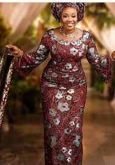
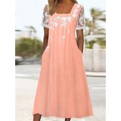
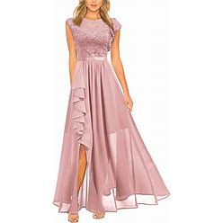
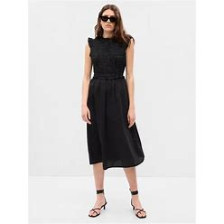
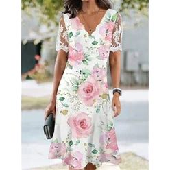
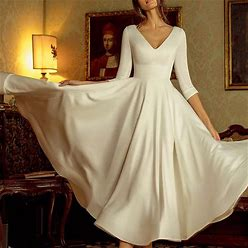
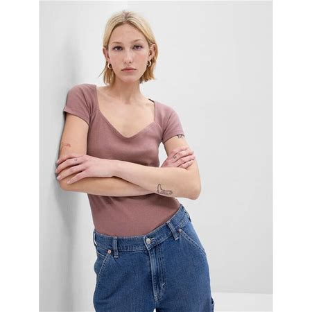
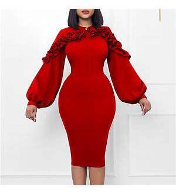

contact
About me
Clothes
We should be thankful for clothing because back in the old days people would wear leaves,rocks and grass just to cover themselves.
About Me
Hello, my name is Aisha and i'm going to tell you about clothing i'm also going to show you some clothes.
- My favoirite colour is yellow because its a bright colour
- My favourite food is pizza cause its yummy
- I have 2 budgies and their names are Owen and Robin
- Last but not least i'm from nigeria so most of the clothes are probably from nigeria
Clothing time!!!👗👗👗



How to make clothes
More clothes that I recommend







The History of clothes
Extraction of fabrics and waving textiles were first started in the Middle East during the late Stone Age. Wearing fabric clothes began from 100,000 to 500,000 years ago. Knitting was first introduced as a fabric creation technique, dating 6500 BC, which is even popular in today's fabrics.